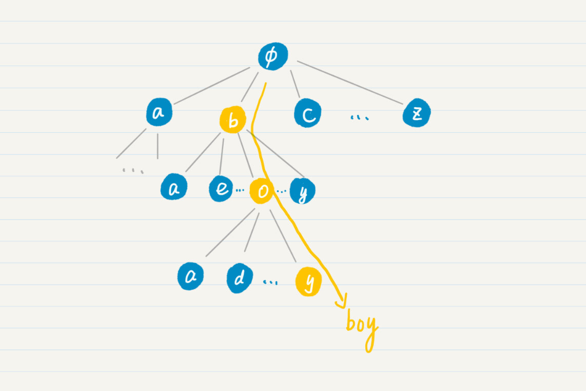
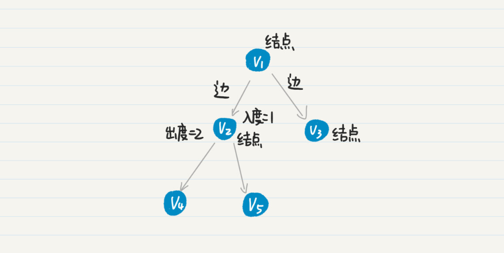
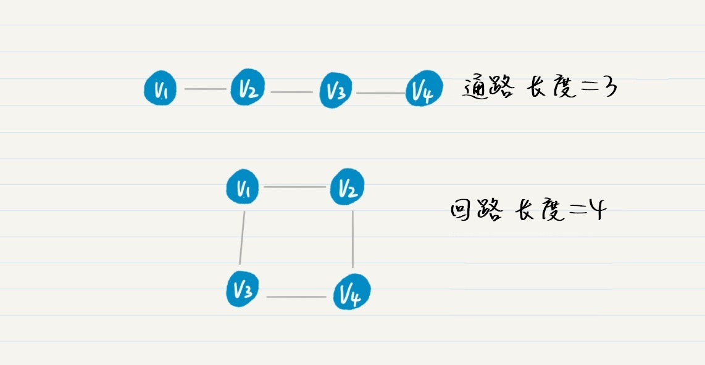
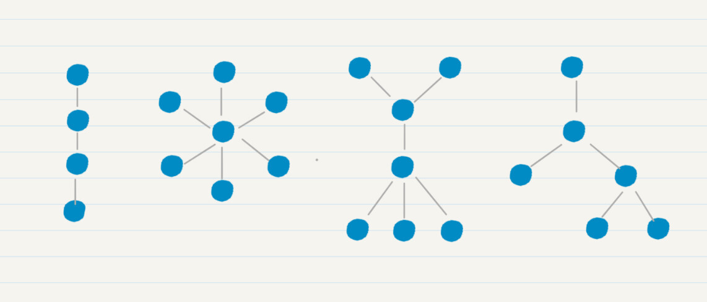
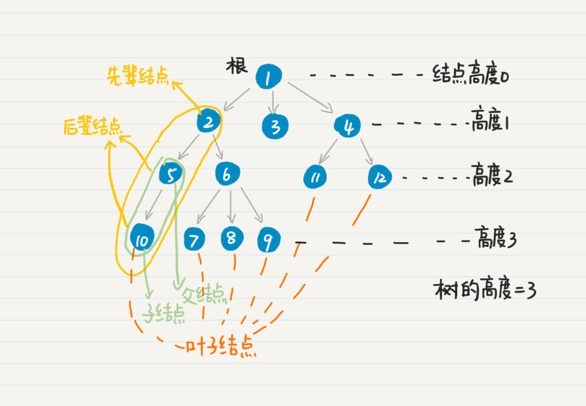
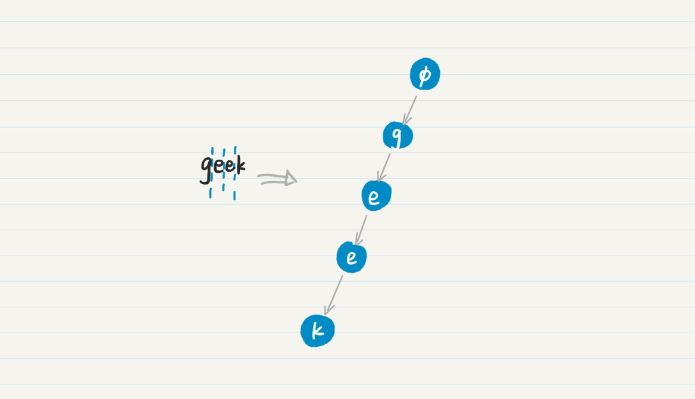
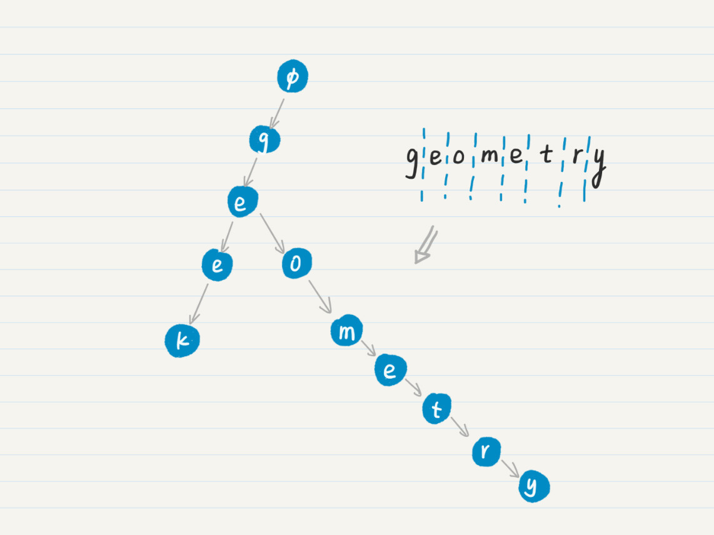
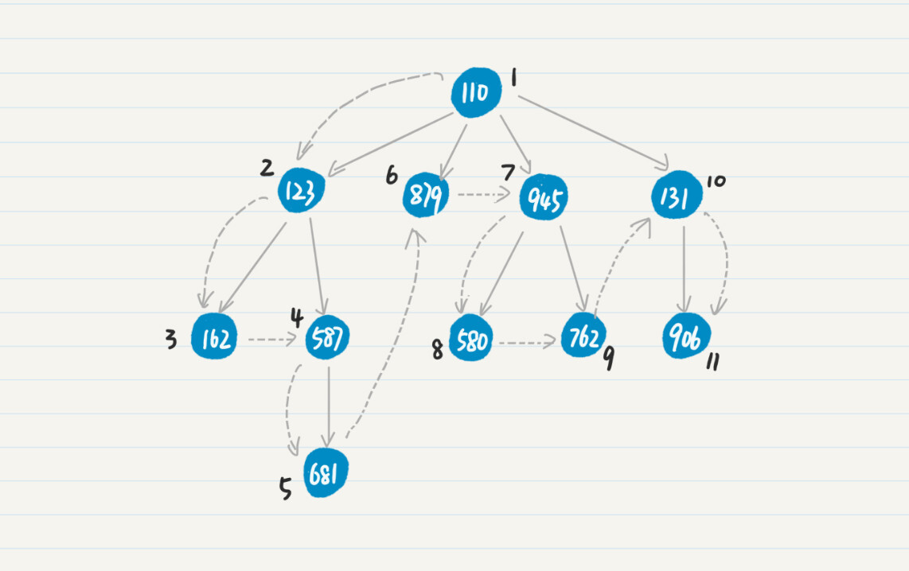
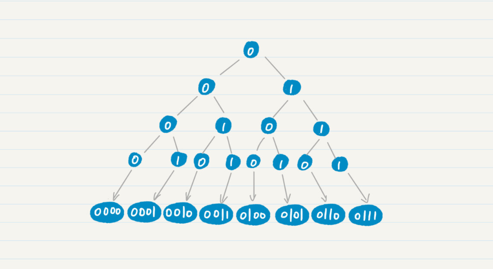

- 01 二进制：不了解计算机的源头，你学什么编程.md.html
- 02 余数：原来取余操作本身就是个哈希函数.md.html
- 03 迭代法：不用编程语言的自带函数，你会如何计算平方根？.md.html
- 04 数学归纳法：如何用数学归纳提升代码的运行效率？.md.html
- 05 递归（上）：泛化数学归纳，如何将复杂问题简单化？.md.html
- 06 递归（下）：分而治之，从归并排序到MapReduce.md.html
- 07 排列：如何让计算机学会“田忌赛马”？.md.html
- 08 组合：如何让计算机安排世界杯的赛程？.md.html
- 09 动态规划（上）：如何实现基于编辑距离的查询推荐？.md.html
- 10 动态规划（下）：如何求得状态转移方程并进行编程实现？.md.html
- 11 树的深度优先搜索（上）：如何才能高效率地查字典？.md.html
- 12 树的深度优先搜索（下）：如何才能高效率地查字典？.md.html
- 13 树的广度优先搜索（上）：人际关系的六度理论是真的吗？.md.html
- 14 树的广度优先搜索（下）：为什么双向广度优先搜索的效率更高？.md.html
- 15 从树到图：如何让计算机学会看地图？.md.html
- 16 时间和空间复杂度（上）：优化性能是否只是“纸上谈兵”？.md.html
- 17 时间和空间复杂度（下）：如何使用六个法则进行复杂度分析？.md.html
- 18 总结课：数据结构、编程语句和基础算法体现了哪些数学思想？.md.html
- 19 概率和统计：编程为什么需要概率和统计？.md.html
- 20 概率基础（上）：一篇文章帮你理解随机变量、概率分布和期望值.md.html
- 21 概率基础（下）：联合概率、条件概率和贝叶斯法则，这些概率公式究竟能做什么？.md.html
- 22 朴素贝叶斯：如何让计算机学会自动分类？.md.html
- 23 文本分类：如何区分特定类型的新闻？.md.html
- 24 语言模型：如何使用链式法则和马尔科夫假设简化概率模型？.md.html
- 25 马尔科夫模型：从PageRank到语音识别，背后是什么模型在支撑？.md.html
- 26 信息熵：如何通过几个问题，测出你对应的武侠人物？.md.html
- 27 决策树：信息增益、增益比率和基尼指数的运用.md.html
- 28 熵、信息增益和卡方：如何寻找关键特征？.md.html
- 29 归一化和标准化：各种特征如何综合才是最合理的？.md.html
- 30 统计意义（上）：如何通过显著性检验，判断你的A_B测试结果是不是巧合？.md.html
- 31 统计意义（下）：如何通过显著性检验，判断你的A_B测试结果是不是巧合？.md.html
- 32 概率统计篇答疑和总结：为什么会有欠拟合和过拟合？.md.html
- 33 线性代数：线性代数到底都讲了些什么？.md.html
- 34 向量空间模型：如何让计算机理解现实事物之间的关系？.md.html
- 35 文本检索：如何让计算机处理自然语言？.md.html
- 36 文本聚类：如何过滤冗余的新闻？.md.html
- 37 矩阵（上）：如何使用矩阵操作进行PageRank计算？.md.html
- 38 矩阵（下）：如何使用矩阵操作进行协同过滤推荐？.md.html
- 39 线性回归（上）：如何使用高斯消元求解线性方程组？.md.html
- 40 线性回归（中）：如何使用最小二乘法进行直线拟合？.md.html
- 41 线性回归（下）：如何使用最小二乘法进行效果验证？.md.html
- 42 PCA主成分分析（上）：如何利用协方差矩阵来降维？.md.html
- 43 PCA主成分分析（下）：为什么要计算协方差矩阵的特征值和特征向量？.md.html
- 44 奇异值分解：如何挖掘潜在的语义关系？.md.html
- 45 线性代数篇答疑和总结：矩阵乘法的几何意义是什么？.md.html
- 46 缓存系统：如何通过哈希表和队列实现高效访问？.md.html
- 47 搜索引擎（上）：如何通过倒排索引和向量空间模型，打造一个简单的搜索引擎？.md.html
- 48 搜索引擎（下）：如何通过查询的分类，让电商平台的搜索结果更相关？.md.html
- 49 推荐系统（上）：如何实现基于相似度的协同过滤？.md.html
- 50 推荐系统（下）：如何通过SVD分析用户和物品的矩阵？.md.html
- 51 综合应用篇答疑和总结：如何进行个性化用户画像的设计？.md.html
- 导读：程序员应该怎么学数学？.md.html
- 开篇词 作为程序员，为什么你应该学好数学？.md.html
- 数学专栏课外加餐（一） 我们为什么需要反码和补码？.md.html
- 数学专栏课外加餐（三）：程序员需要读哪些数学书？.md.html
- 数学专栏课外加餐（二） 位操作的三个应用实例.md.html
- 结束语 从数学到编程，本身就是一个很长的链条.md.html
- 捐赠
11 树的深度优先搜索（上）：如何才能高效率地查字典？
你好，我是黄申。
你还记得迭代法中的二分查找吗？在那一讲中，我们讨论了一个查字典的例子。如果要使用二分查找，我们首先要把整个字典排个序，然后每次都通过二分的方法来缩小搜索范围。
不过在平时的生活中，咱们查字典并不是这么做的。我们都是从单词的最左边的字母开始，逐个去查找。比如查找“boy”这个单词，我们一般是这么查的。首先，在a～z这26个英文字母里找到单词的第一个字母b，然后在b开头的单词里找到字母o，最终在bo开头的单词里找到字母y。
你可以看我画的这种树状图，其实就是从树顶层的根结点一直遍历到最下层的叶子结点，最终逐步构成单词前缀的过程。对应的数据结构就是前缀树（prefix tree），或者叫字典树（trie）。我个人更喜欢前缀树这个名称，因为看到这个名词，这个数据结构的特征就一目了然。

那前缀树究竟该如何构建呢？有了前缀树，我们又该如何查询呢？今天，我会从图论的基本概念出发，来给你讲一下什么样的结构是树，以及如何通过树的深度优先搜索，来实现前缀树的构建和查询。
图论的一些基本概念
前缀树是一种有向树。那什么是有向树？顾名思义，有向树就是一种树，特殊的就是，它的边是有方向的。而树是没有简单回路的连通图。
如果一个图里所有的边都是有向边，那么这个图就是有向图。如果一个图里所有的边都是无向边，那么这个图就是无向图。既含有向边，又含无向边的图，称为混合图。

在有向图中，以结点\(v\)为出发点的边的数量，我们叫作\(v\)的出度。而以\(v为\)终点的边之数量，称为\(v\)的入度。在上图中，结点\(v\_{2}\)的入度是1，出度是2。
还有两个和有向树有关的概念，回路和连通，我这里简单给你解释一下，你很容易就能明白了。
结点和边的交替序列组成的就是通路。所以，通路上的任意两个结点其实就是互为连通的。如果一条通路的起始点\(v\_{1}\)和终止点\(v\_{n}\)相同，这种特殊的通路我们就叫作回路。从起始点到终止点所经过的边之数量，就是通路的长度。这里我画了一张图，这里面有1条通路和1条回路，第一条非回路通路的长度是3，第二条回路的长度是4。

理解了图的基本概念，我们再来看树和有向树。树是一种特殊的图，它是没有简单回路的连通无向图。这里的简单回路，其实就是指，除了第一个结点和最后一个结点相同外，其余结点不重复出现的回路。你可以看我画的这几幅图。

那么，什么是有向树呢？顾名思义，有向树是一种特殊的树，其中的边都是有向的，而且它满足以下几个条件：
有且仅有一个结点的入度为0，这个结点被称为根；
除根以外的所有结点，入度都为1。从树根到任一结点有且仅有一条有向通路。
除了这些基本定义，有向树还有几个重要的概念，父结点、子结点、兄弟结点、先辈结点、后辈结点、叶子结点、结点的高度（或深度）、树的高度（或深度）。这些都不难理解，我画个图展示一下，你就能明白了。我把根结点的高度设置为0，根据需要你也可以设置为1。

前缀树的构建和查询
好了，说了这么些，你对有向树应该有了理解。接下来，我们来看，如何使用有向树来实现前缀树呢？这整个过程主要包括两个部分：构建前缀树和查询前缀树。
1. 构建前缀树
首先，我们把空字符串作为树的根。对于每个单词，其中每一个字符都代表了有向树的一个结点。而前一个字符就是后一个字符的父结点，后一个字符是前一个字符的子结点。这也意味着，每增加一个字符，其实就是在当前字符结点下面增加一个子结点，相应地，树的高度也增加了1。
我们以单词geek为例，从根结点开始，第一次我增加字符g，在根结点下增加一个“g”的结点。第二次，我在“g”结点下方增加一个“e”结点。以此类推，最终我们可以得到下面的树。

那如果这个时候，再增加一个单词，geometry会怎样？我们继续重复这个过程，就能得到下面这个图。

到这里为止，我们已经建立了包含两个单词的前缀树。在这棵树的两个叶子结点“k”和“y”上，我们可以加上额外的信息，比如单词的解释。那么在匹配成功之后，就可以直接返回这些信息，实现字典的功能了。假设我把牛津词典里所有的英文单词都按照上述的方法处理一遍，就能构造一棵包含这个字典里所有单词的前缀树，并实现常用单词的查找和解释。
2. 查询前缀树
假设我们已经使用牛津词典，构建完了一个完整的前缀树，现在我们就能按照开篇所说的那种方式，查找任何一个单词了。从前缀树的根开始，查找下一个结点，顺着这个通路走下去，一直走到某个结点。如果这个结点及其前缀代表了一个存在的单词，而待查找的单词和这个结点及其前缀正好完全匹配，那就说明成功找到了一个单词。否则，就表示无法找到。
这里还有几种特殊情况，需要注意。
如果还没到叶子结点的时候，待查的单词就结束了。这个时候要看最后匹配上的非叶子结点是否代表一个单词；如果不是，那说明被查单词并不在字典中。
如果搜索到前缀树的叶子结点，但是被查单词仍有未处理的字母。由于叶子结点没有子结点，这时候，被查单词不可能在字典中。
如果搜索到一半，还没到达叶子结点，被查单词也有尚未处理的字母，但是当前被处理的字母已经无法和结点上的字符匹配了。这时候，被查单词不可能在字典中。
前缀树的构建和查询这两者在本质上其实是一致的。构建的时候，我们需要根据当前的前缀进行查询，然后才能找到合适的位置插入新的结点。而且，这两者都存在一个不断重复迭代的查找过程，我们把这种方式称为深度优先搜索（Depth First Search）。
所谓树的深度优先搜索，其实就是从树中的某个结点出发，沿着和这个结点相连的边向前走，找到下一个结点，然后以这种方式不断地发现新的结点和边，一直搜索下去，直到访问了所有和出发点连通的点、或者满足某个条件后停止。
如果到了某个点，发现和这个点直接相连的所有点都已经被访问过，那么就回退到在这个点的父结点，继续查看是否有新的点可以访问；如果没有就继续回退，一直到出发点。由于单棵树中所有的结点都是连通的，所以通过深度优先的策略可以遍历树中所有的结点，因此也被称为深度优先遍历。
为了让你更容易理解，我用下面这张图来展示在一棵有向树中进行深度优先搜索时，结点被访问的顺序。

其中，结点上的数字表示结点的ID，而虚线表示遍历前进的方向，结点边上的数字表示该结点在深度优先搜索中被访问的顺序。在深度优先的策略下，我们从点110出发，然后发现和110相连的点123，访问123后继续发现和123相连的点162，再往后发现162没有出度，因此回退到123，查看和123相连的另一个点587，根据587的出度继续往前推进，如此类推。
把深度优先搜索，和在前缀树中查询单词的过程对比一下，你就会发现两者的逻辑是一致的。不过，使用前缀树匹配某个单词的时候，只需要沿着一条可能的通路搜索下去，而无需遍历树中所有的结点。
小结
在这一讲，我从数学中图的一些基本定义入手，介绍了有向树，以及有向树的一个应用，前缀树。树在计算机领域中运用非常广泛。比如，二叉树和满二叉树。
二叉树是每个结点最多有两个子树的树结构，它可用于二叉查找树和二叉堆。二叉树甚至可以用于图示化我们之前聊过的二分迭代。
满二叉树是一棵高度为n（高度从1开始计），且有2^n-1个结点的二叉树。在高度为k(0≤n）的这一层上，结点的数量为2^(k-1)。如果把树的根标为0，每个结点的左子结点标为0，每个结点的右子结点标为1，那么把根到叶子结点的所有0或1连起来，就正好对应一个二进制数。

既然树是如此重要，那么我们该如何高效率地访问树中的结点呢？下一讲，我会继续前缀树的话题，讨论如何遍历树中所有结点。
思考题
现在给你一个字典，请尝试实现其前缀树，包括树的构建和查询两个过程。这里，字典可以用字符串数组来表示，每个字符串代表一个单词。
欢迎在留言区交作业，并写下你今天的学习笔记。你可以点击“请朋友读”，把今天的内容分享给你的好友，和他一起精进。
© 2019 - 2023 Liangliang Lee. Powered by gin and hexo-theme-book.